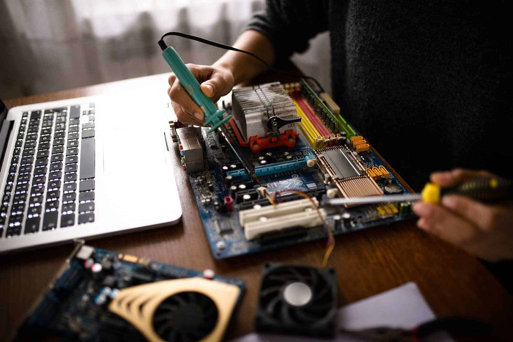
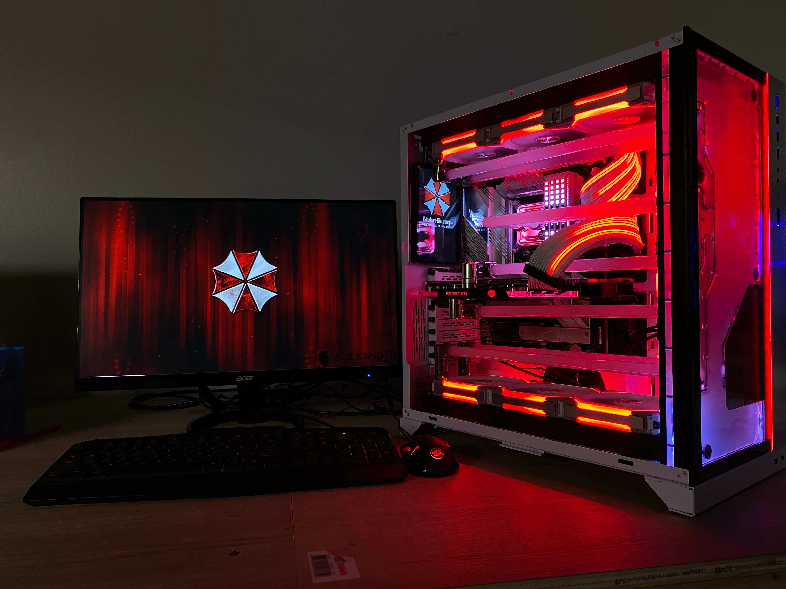

Device Sales
Selling laptops, desktops, smartphones, and accessories like chargers, keyboards, and headphones.
Repairs & Maintenance
Fixing hardware and software issues, including screen replacements, battery changes, and virus removal.

Custom PC Building
Assembling PCs tailored to customer needs, whether for gaming, work, or general use.

Software Installation
Installing operating systems, productivity software, antivirus programs, and updates.

Data Recovery & Backup
Retrieving lost data from damaged storage devices and setting up secure backup solutions.
Networking Services
Setting up Wi-Fi networks, routers, and troubleshooting connectivity issues for homes and businesses.
Consultation & Tech Support
Providing expert advice on purchasing tech products and offering troubleshooting assistance.
Trade-In & Recycling
Accepting old or damaged devices for trade-in value or eco-friendly disposal.